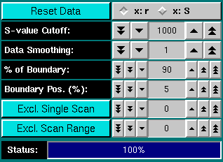

|
Manual
|
Time Derivative (dC/dt) Data Analysis:
The DCDT or Time Derivative method will calculate g(S) differential
sedimentation profiles by subtracting consecutive scan pairs from each
other and mapping the resulting difference curves to the S domain to
obtain dcdt curves. The advantage of this method is its ability to nicely
subtract out time invariant noise, such as window scratches and dirt,
as well as refractive index hetereogeneities in the windows. The latter
is particularly important for low-concentration interference data. Unlike
the van Holde - Weischet method, the Time Derivative
method does not correct for diffusion. In order to obtain accurate results
with this method, it is important that you use only a small scan range
over which diffusion has not changed significantly.
You start the Time Derivative analysis by clicking on "Time Derivative" in the Velocity sub-menu
of the main menu. The main Time Derivative Data
analysis window will appear.
The first step in the analysis requires that you load an
UltraScan dataset that has previously been edited with
the UltraScan editing module. UltraScan
sedimentation velocity datasets always have the suffix ".us.v". Click
on the "Load Dataset" button in the left upper corner of the control
panel. Simply select the desired run from the selection of available runs
in the dataset loading dialog. Once loaded,
the Run Details will be shown. Click on
the "Accept" or "Cancel" button, and you will be returned
to the analysis window, which will show the first
available dataset of the selected run in the edited data window on the
lower right panel, and the Time Derivative analysis will be shown in
the upper right panel of the analysis window.
If the scans in your experimental data have not cleared the meniscus
(as judged by the baseline defined during editing), an insufficient
number of scans may be available for the analysis and an
error message will be shown. In that case, you
can raise the baseline and reduce the fraction of the boundary analyzed
(see below).
Analysis Functions:
 |
Click on these buttons to control the time derivative analysis:
- Load Data: Load edited data sets (with the *.us suffix). A
file dialogue will allow you to select a
previously edited and saved velocity experiment. If the data was edited
with an older version of UltraScan than the current, an error
message will be displayed.
-
Run Details: View the diagnostic details
for a particular run.
-
Avg. dC/dt Plot: View the average dC/dt plot
derived from the dC/dt vs. S-value plot.
-
Save Data: Write out a copy of all results to an ASCII formatted
data file suitable for import into a spreadsheet plotting program. See
"File Structures and Formats" for details.
Note: These files are overwritten each time this button is clicked. Only
the last version of the analysis will be saved!
-
Print Data: Load the printer control
panel for printing of plot graphics
-
View Data Report: See the data report for the last analysis setting.
Note: This file is re-written each time it is accessed. Only the current
analysis result is available.
-
Help: This help file
-
Close: Close the dC/dt analysis window.
|
Run Information:
 |
-
Run ID: The name of the run given during editing
-
Temperature: The average temperature calculated from the entire run
-
Available Cells: The numbers the cells that contain analyzable data
Clicking on a cell and wavelength selection will bring up the cell contents
description for that cell and wavelength. Scroll through this list to bring
up information for cells > 3. If there is no data available for the selected
cell, the program will list "No Data available". Selecting a cell/wavelength
combination will automatically bring up the corresponding dataset and present
the analysis. |
Experimental Parameters:
 |
Here you can enter the corrections for density, viscosity, and partial
specific volume of your sample. As you change the information in these
fields, the program will automatically update the analysis to correct the
S-value according to the specified buffer conditions. If the data was
retrieved from the database and associated with the correct buffer file
and peptide file, the density, viscosity and partial specific volume (vbar)
will automatically be updated to the appropriate values and don't need to be
adjusted to produce S 20,W corrected values.
|
Analysis Controls:
|  |
-
Reset Data - use this button to reset the default settings for the
analysis.
-
X-Axis Coordinate setting: This toggle switch allows you to select
the X-Axis coordinate.
There are two display
modes: The default mode will display dC/dt profiles of the experimental
data versus radius (Checkbox: "x: r", meaning X-axis is in radius coordinates).
The other mode is to display the dC/dt profiles versus
S (Checkbox: "x: S", meaning X-axis is in S-value coordinates).
-
S-value Cutoff: The S-value Cutoff is used to control the maximum
S-value displayed in the dC/dt vs. S-value plot.
By default, this cutoff is set to a maximum of 1000s, which may be unrealistic
for most samples. Changing this value allws you then to scale the plot
to the proper dimensions.
-
Data Smoothing: Use this feature to smooth the experimental data.
For noisy data, increasing this parameter can improve the clarity and appearance
of the results considerably. Please note: Whenever possible, especially
for very steep boundaries with low diffusion, try to avoid using too much
smoothing to prevent artificial modification of the boundary shape. Smoothing
is performed based on a frame average. The number shown represents the
size of the smoothing kernel used (the number of datapoints averaged for
a single point). The algorithm used is non-destructive of the original
data and hence the smoothing is reversible. Also, point smoothing is independent,
where the smoothing of one point does not have any effect on the smoothing
of its neighbors. Only unsmoothened points are used for the calculation
of the smothed value. Each time you click on the counter, the current dataset
will be reset to the full dataset.
-
% of Boundary: This is the portion of the boundary used for the
analysis. 100 % refers to the entire boundary, reaching from the baseline
concentration value to the plateau concentration value. This portion is
shown in yellow in the experimental data plot at the lower right panel
of the main analysis window. Excluded data is shown in
blue. Changing this number will automatically reset the position of the
analyzable portion of the boundary in the center of concentration between
the baseline and the plateau concentration.
-
Boundary Position (%): For percent-boundary values less than
100 %, this number refers to the percentage of total concentration by which
the remainder (=un-analyzed portion of the boundary) is shifted away from
the baseline. A value of 0% refers to a data analysis start at the baseline.
This number is always less than or equal to 100 % - (% of Boundary). It
allows you to control the position of the analyzed portion relative to
the baseline. The blue colored portion of a scan is excluded from the analysis,
and the yellow portion is analyzed.
-
Exlude Single Scan: When setting this counter to a non-zero value,
the respective scan will be highlighted in red. Clicking on "Excl. Single
Scan" while a scan is highlighted in red will delete this scan from the
analysis. Deleting scans from the analysis is irreversible and can only
be reset by clicking on the "Reset" button or by reloading the data (when
smoothing, the data is always automatically reloaded).
-
Exclude Scan Range: Same as "Exclude Single Scan", except
for multiple scans. To use this feature, select first the start scan of
the range by using "Exclude Single Scan", then complete the scan
range by using "Exclude Scan Range".
-
Status: The status bar informs the user about the progress of the
analysis. On slower computers this has more significance than on a fast
Unix machine.
|
www contact: Borries Demeler
This document is part of the UltraScan Software Documentation
distribution.
Copyright © notice.
The latest version of this document can always be found at:
http://www.ultrascan.uthscsa.edu
Last modified on January 12, 2003.
{kind=link}
{kind=link}
{kind=link}
{kind=link}
{kind=link}
{kind=link}
{kind=link}
{kind=link}
{kind=link}